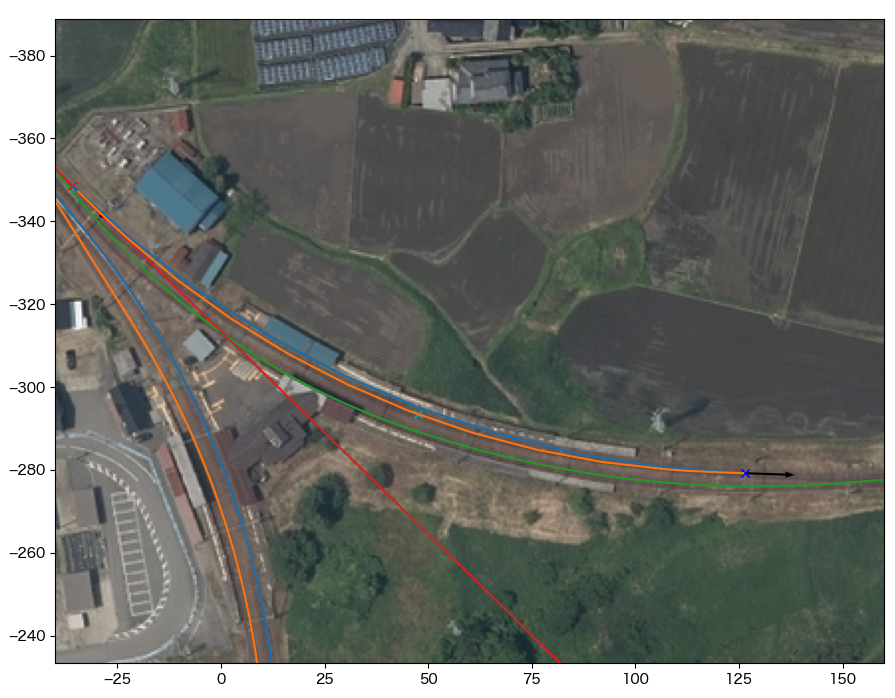
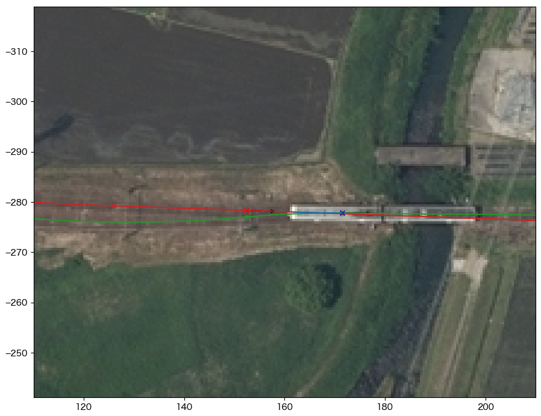

5. honsen_up の構築¶
5.1. 始点を決める¶
honsen_down軌道の始点座標を求め、main.cfgに[honsen_up]セクションを追加する。
カーソルAのtrackをhonsen_downにセットする
カーソルAを富山寄り分岐器の始端にセットし、その地点の距離程を読む
ここでは60m
下記の内容でmain.cfgに[tateyama_down]セクションを追加する
始点はhonsen_down軌道の距離程60m地点での値と同一、向きはtateyama_upと180°反対方向に設定される
- main.cfg¶
... [honsen_up] file = honsen_up.txt absolute_coordinate = False parent_track = honsen_down origin_kilopost = 60 x = 0 y = 0 z = 0 angle = 0 endpoint = 1500
main.cfgと同じディレクトリに以下の内容でhonsen_up.txtを作成する
- honsen_up.txt¶
BveTs Map 2.02:utf-8 0; Curve.SetGauge(1.067); Curve.SetFunction(0);
5.2. 富山寄り分岐器¶
カーソルAのtrackをhonsen_upにセットする
カーソルAの位置、方向を距離程0mにセットする
CurveTrack Solverを以下の設定にしてDo Itする
CCL: 18.53
R: -185.5
α: A, β: B (要確認)
Assign results to cursor にチェック
mapsyntax にチェック
Mode: 4. α(fix), R(fix), CCL(fix)
ターミナルへの出力をhonsen_up.txtにコピーする
- honsen_up.txt¶
... $pt_a = 0; $pt_a +0.000000; $cant = 0; Curve.SetFunction(1); Curve.Interpolate(0.000000,0); $pt_a +0.000000; Curve.Interpolate(-185.500000, $cant); $pt_a +18.500000; Curve.Interpolate(-185.500000, $cant); $pt_a +18.500000; Curve.Interpolate(0.000000,0);
データをリロードする
{kind=link}
5.3. プラットホーム部¶
honsen_downの場合と同様に、この曲線も現在のtsutsujiの機能では簡単に求めることができない。 ここでは以下のようにして切り抜ける。
カーソルAのtrackをhonsen_upにセットする
カーソルAの位置・方向を富山寄り分岐器の終端にセットする
距離程18.5mに相当する
カーソルBのtrackを @absoluteにセットする
カーソルBの位置・方向をプラットホームにかかる曲線の終点にセットする
カーソルCのtrackを @absoluteにセットする
カーソルCの位置・方向をプラットホーム中央の軌道中心にセットする
CurveTrack Solverを以下の設定にしてDo Itする
α: A, β: B, γ: C
mapsyntax にチェック
Mode: 6. α(fix)->β(free) via γ, R(free)
- 
ターミナルへの出力をhonsen_up.txtにコピーする
- honsen_up.txt¶
... $pt_a = 18.500000; $pt_a; $cant = 0; Curve.SetFunction(1); Curve.Interpolate(0.000000,0); $pt_a +18.945398; Curve.Interpolate(-219.113383, $cant); $pt_a +162.131808; Curve.Interpolate(-219.113383, $cant); $pt_a +181.077207; Curve.Interpolate(0.000000,0);
データをリロードする
{kind=link}
{kind=link}
カーソル |
x |
y |
dir |
track |
kilopost |
|---|---|---|---|---|---|
A |
-35.9 |
-348.6 |
-315.6 |
honsen_up |
18.5 |
B |
126.5 |
-279.2 |
-358.0 |
@absolute |
/ |
C |
98.7 |
-281.9 |
/ |
@absolute |
/ |
5.4. 宇奈月寄り分岐器¶
honsen_downの場合と同様に、空中写真に対して現物合わせで寸法を求める。
カーソルAのtrackをhonsen_upにセットする
カーソルAの位置、方向を分岐器手前の直線軌道上の適当な点にセットする
ここでは距離程226.0mに設定
カーソルBのtrackをhonsen_downにセットする
カーソルBの位置、方向を分岐器終端にセットする
距離程308.0m
CurveTrack Solverを以下の設定にしてDo Itする
α: A, β: B
mapsyntax にチェック
Mode: 2. α(free)->β(fix), R(free)
- 
ターミナルへの出力をhonsen_up.txtにコピーする
- honsen_up.txt¶
... $pt_a = 226.000000; $pt_a +9.311951; $cant = 0; Curve.SetFunction(1); Curve.Interpolate(0.000000,0); $pt_a +9.311951; Curve.Interpolate(-396.093623, $cant); $pt_a +19.033903; Curve.Interpolate(-396.093623, $cant); $pt_a +19.033903; Curve.Interpolate(0.000000,0);
データをリロードして完成
{kind=link}
{kind=link}
カーソル |
x |
y |
dir |
track |
kilopost |
|---|---|---|---|---|---|
A |
152.5 |
-278.3 |
-358.0 |
honsen_up |
226.0 |
B |
171.5 |
-277.8 |
-359.4 |
honsen_down |
308.0 |